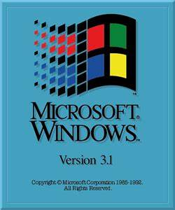
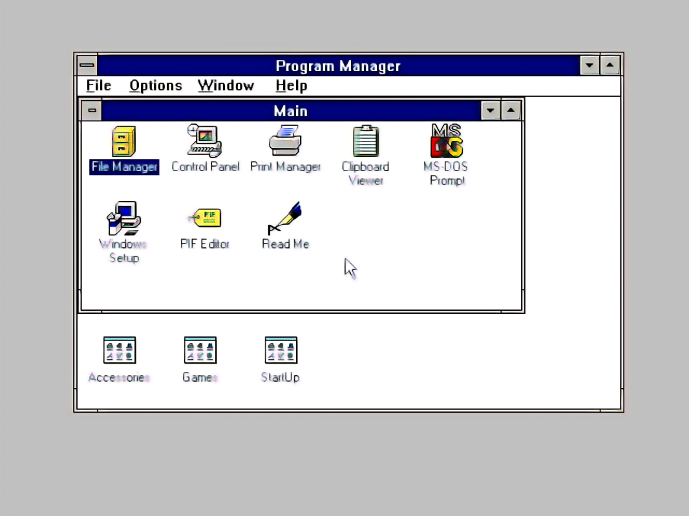

Windows 3.1

Wersja: Windows 3.1
Data premiery: 6 kwietnia 1992
Architektura: 16-bit
Windows 3.1 to system, który zapoczątkował wielki sukces Windows wśród użytkowników komputerów osobistych. Dzięki intuicyjnemu GUI stał się ulubieńcem wielu. To był początek końca MS-DOS, chociaż systemy z DOS-em i tak długo utrzymywały się w użyciu.

Data premiery: 6 kwietnia 1992
Architektura: 16-bit
Windows 3.1 to system, który zapoczątkował wielki sukces Windows wśród użytkowników komputerów osobistych. Dzięki intuicyjnemu GUI stał się ulubieńcem wielu. To był początek końca MS-DOS, chociaż systemy z DOS-em i tak długo utrzymywały się w użyciu.
üîß Wymagania sprzętowe
- Procesor: 386 DX
- Pamięć RAM: minimum 2 MB
- Dysk twardy: minimum 6 MB
- Karta graficzna: VGA
- Napęd CD-ROM lub stacja dyskietek
üíΩ Instrukcja instalacji
- Pobierz plik ISO klikając przycisk poniżej.
- Utwórz bootowalny nośnik z systemem Windows 3.1.
- Uruchom komputer z nośnika i postępuj zgodnie z instrukcjami instalacyjnymi.
- Zainstaluj sterowniki dla swojej karty graficznej oraz dźwiękowej.